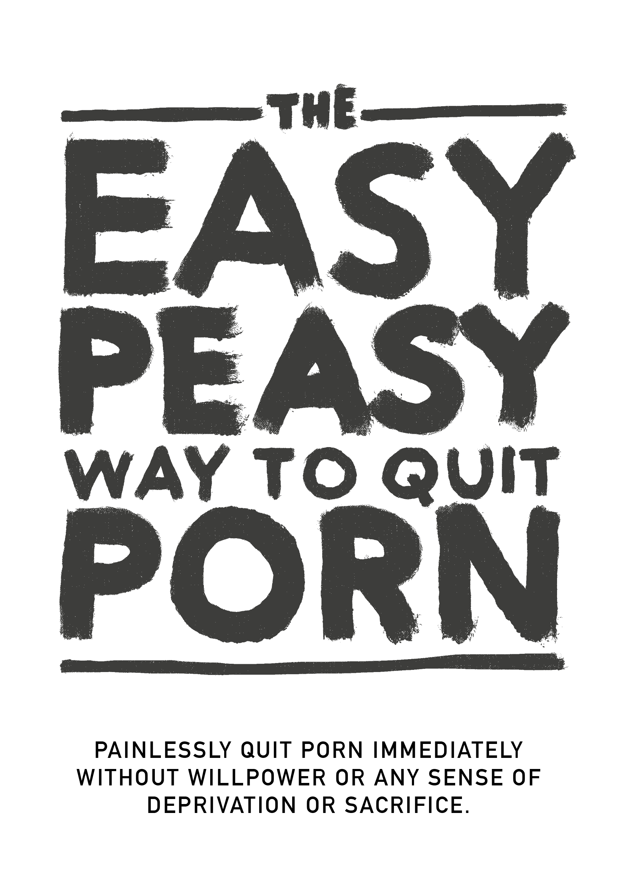

EasyPeasy
2025-11-08
Prefácio

NÃO PULE CAPÍTULOS
Essa é uma versão reescrita do hackbook adaptando o livro Allen Carr’s EasyWay to Stop Smoking para a pornografia. É também completamente livre e open source. Não sou o autor original de nenhum desses dois livros. Sou o Hackauthor².
É efetivo, mas para que tenha sucesso é necessario que você:
NÃO PULE CAPÍTULOS
Ao abrir um cofre você deve digitar os números na ordem correta O vício não funciona diferente disso.
Pessoalmente, a versão original no Google Sites (que não foi escrita por mim) mudou minha vida. Se você é como a maioria das pessoas, acabou descobrindo a pornografia quando era bem jovem e passou a utilizá-la desde então. Até se deparar com as chocante – e ainda censuradas – pesquisas alertando sobre os riscos. Como eu, você teve sucesso em diversos períodos de abstinência de diversas durações, mas sempre teve recaídas por conta de desejos fortes e ilusórios. Sinto prazer em dizer que o método que exponho aqui funciona de forma totalmente diferente e tem sido o único método que tem funcionado.
Talvez alguém tenha te indicado esse livro e você está cético. Primeiro, obrigado por pelo menos dar uma olhada nele. Isso vai ser explicado melhor depois, mas, por favor, lembre-se rapidamente da primeira vez que você teve contato com a pornografia. Você esperava que voltaria a ela pelo resto da sua vida? De acordo com meus estudos informais sobre o assunto (perturbando meus amigos para lerem esse livro), o Método Fácil é eficaz tanto para o usuário casual de pornografia quanto para o usuário pesado. O livro não é longo e há grandes chances de se ter muitos ganhos com ele, e por isso eu te imploro que continue lendo.
O método descrito nesse hackbook é: - É instantâneo;
É igualmente efetivo para o usuário casual e para o mais viciado;
Não causa fissuras terríveis;
Não precisa de força de vontade
Não necessita de tratamento de choque, auxílios ou truques
Não causará a troca de um vício pelo outro, como compulsão alimentar, beber ou fumar
Permanente
Talvez você ache isso impossível de acreditar, mas esse sentimento é propagado por muitas pessoas.
“Esse livro é ouro. É inacreditável que eu possa acessar esse conteúdo de graça, enesse livro simples e com menos de 100 páginas. É inacreditável também a quantidade de dinheiro que eu gastei em cursos e quantas horas desperdiçadas procurando soluções em fóruns e tendo 0 resultados”
— u/OyaPunpun (usuário do reddit)
“Fui viciado por 10 anos. Esses 10 anos eu sofri com depressão, dúvidas, ansiedade e medo de que meu segredo se tornaria conhecido. Depois de cada sessão eu me odiava e a cada ‘dieta’ de porno que eu fazia eu voltava para o tobogã rapidamente. Mas esse livro me ajudou a parar. Eu ficava na defensiva sobre a pornografia no passado. Agora, depois de ler esse livro duas vezes estou na ofensiva. O pornô não tem mais controle sobre mim e agora parece uma piada triste.”
— u/DeepNewt (usuário do reddit)
Allen Carr é um sujeito com uma vida extremamente interessante: por mais de trinta anos fumando 100 cigarros por dia, Allen parou de fumar imediatamente após descobrir o Método Fácil e, como citado no livro dele, isso “o permitiu seguir um extremo desejo de explicar o seu método para o máximo número possível de fumantes.” O método dele para álcool e outras várias outras drogas e vícios permanece sendo um bestseller global e encorajo a você a procurar mais sobre.
O centro do seu trabalho lida com a dissipação do medo causada pelos equívocos e confusões sobre processos biológicos e o processo de se livrar do vício. Logo, a maior parte do livro é a desconstrução lógica das ansiedades e fobias associadas com o processo de saída do vício que geralmente levam ao fracasso relatado pelos muitos que tentam e fracassam. As clínicas do Allen têm uma taxa de sucesso de acima de 95%, com garantia de devolução do dinheiro. Mais importante, eles permitem que seus pacientes vivam de forma satisfatória e livres de seus vícios.
Por que um hackbook? Porque Allen morreu faz tempo e a instituição que ele fundou não lista pornografia como um vício que eles tratam. Não ganho dinheiro nem nada com esse livro.
Hackbook: Um livro baseado e hackeado de outro livro. O autor original tem todos os créditos.
Durante o livro, eu, o autor original do Hackbook, e Allen Carr iremos aparecer transparentemente para lhe dar um método único e convincente de se livrar do vício facilmente e sem dor.
Dicas para a leitura:
Não leia esse livro como um livro normal, é curto e você é capaz de terminar de ler em poucas horas. A maioria das pessoas obtêm benefícios ao sublinhar e tomar notas e normalmente é recomendado reler o livro algumas vezes para fixar melhor as lições.
Muitas comunidades existem para o hackbook também, mas é recomendável acessar somente ao terminar o livro.
urbit - ~mislyr-midnyt/easypeasy | coomer.org imageboard (novo!) | dados de acesso públicos | matrix | discord | reddit
Lembrança rápida:
NÃO PULE CAPÍTULOS
Desejo sorte a você, mas como você aprenderá em breve você não precisará.
Boa sorte,
HackauthorBR
O texto que se lê aqui é a tradução em português do original. O livro foi traduzido por um grupo de voluntários que se conheceu no Reddit e no Discord. Mantivemos o livro fiel ao original, mas tivemos que adaptar expressões idiomáticas e coisas do tipo, bem como ênfases em determinadas palavras e na pontuação, com o propósito de provocar o efeito provocado pelas expressões originais que perdiam o impacto ao serem traduzidas. Algumas passagens tiveram que ser reescritas com o propósito de eliminar ambiguidade, mas isso sempre foi feito de modo a manter a mesma ideia, mesmo que por meio de diferentes construções de frases. O livro é um projeto de código aberto e se você quiser você também pode ajudar a aprimorá-lo, melhorando a tradução ou até mesmo aperfeiçoando seu conteúdo. Os meios para fazer isto estão no capítulo 33, cujo título é “O fim do livro”.
O título original do livro é “The easy way to stop watching porn”, também conhecido como “the EasyPeasy method”.